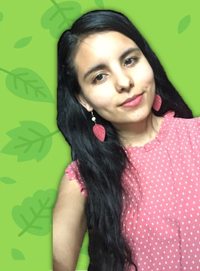

Nombre: Alejandra López Vega
Edad: 20 años
Ciudad: Santiago Tangamandapio
Carrera: Ingenieria en Sistemas Computacionales
Semestre: Quinto
Pasatiempo: Uno de mis pasatiempos favoritos es dibujar y
pintar. Me gusta crear nuevas ideas y visualisar los ambientes que
me rodean, observar sus formas y colores por los cuales se constituyen.
Estado civil: Mejor ni lo cuento :D
